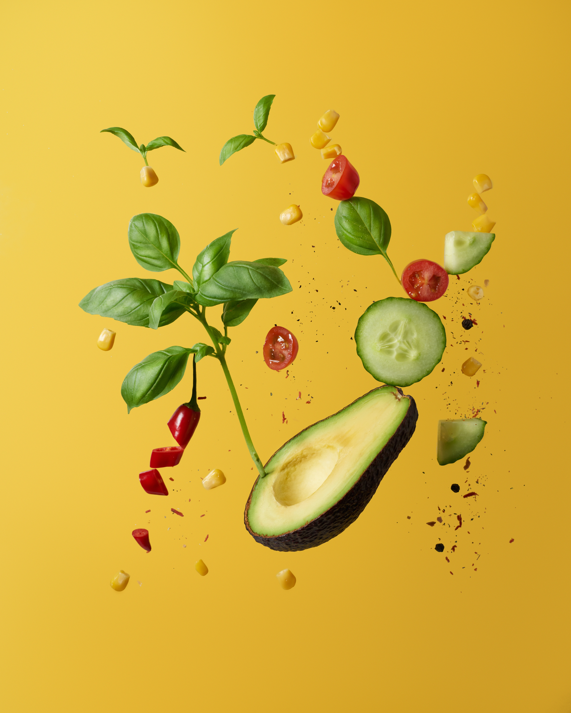
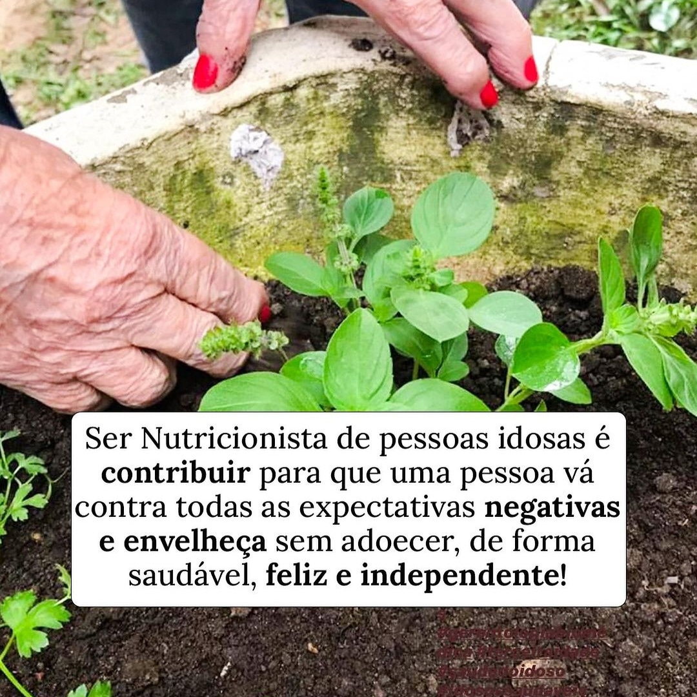
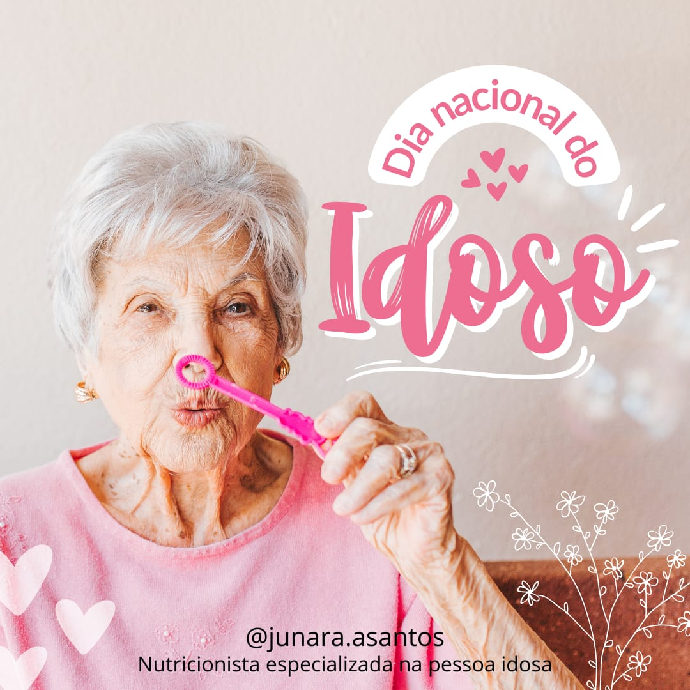

Junara Andrade dos Santos
- Nutricionista Especializada na Pessoa Idosa!
- Atendimento sem terrorismo nutricional!
- Reeducação alimentar!
- Longevidade Saudável e feliz!
- Acompanhamento personalizado!
Sou a Junara, mãe, esposa, servidora pública e nutricionista (CRN2 – 18376D), residente em Santo Antônio da Patrulha – RS apaixonada por nutrição e movida pelo sonho de fazer diferença na vida das pessoas que cruzarem meu caminho! Minha trajetória na nutrição iniciou em 2018 quando iniciei alguns cursos para aprendizado nesta área após um diagnóstico de dislipidemia na família. Comecei a me interessar por esse mundo da nutrição que poderia fazer muita diferença na nossa vida. Em 2019 iniciei então minha graduação na Universidade Cruzeiro do Sul – FSG e desde então me encanto cada dia mais com tudo que o mundo da nutrição pode nos apresentar e nos ajudar. Em 2023 iniciei meu curso de especialização Formação de Nutricionistas 60, pois desde o primeiro estágio da graduação de deparei com a importância que vejo na nutrição de nossos idosos. Assim como cada faixa etária, a terceira idade também merece toda a nossa atenção e cuidado nutricional pois suas necessidades são diferenciadas e bem importantes para alcançarem uma longevidade saudável e com autonomia para a realização de suas rotinas diárias. Como nutricionista meu objetivo é ajudar pessoas que querem adotar um novo estilo de vida, a fazerem escolhas alimentares mais equilibradas, mostrando resultados disso na sua saúde.
Meu atendimento em Santo Antônio é em domicílio, com horário agendado para sua melhor comodidade. Tenho como foco proporcionar um serviço personalizado e confortável, levando em consideração as necessidades individuais de cada cliente. Além disso, trabalho com pacotes de consultas, visando oferecer um acompanhamento mais abrangente e consistente ao longo do tempo. Com esse formato, posso acompanhar de perto a evolução de cada paciente e ajustar as estratégias nutricionais de acordo com as mudanças em seu estilo de vida e necessidades específicas. Meu objetivo é promover não apenas mudanças alimentares, mas também melhorar a qualidade de vida e o bem-estar geral dos meus pacientes idosos, garantindo que recebam a atenção e o suporte necessários para alcançar seus objetivos de saúde a longo prazo.
*Consulta nutricional de acordo com a sua necessidade *Plano de cuidados personalizado, adaptado às suas preferências alimentares e restrições dietéticas específicas *Acompanhamento online semanal para monitorar o progresso e ajustar o plano conforme necessário *Materiais de suporte abrangentes, incluindo receitas saudáveis, guias de compras e dicas práticas para facilitar a implementação das mudanças nutricionais *Acesso exclusivo ao aplicativo do paciente, permitindo o registro diário de alimentos, monitoramento de atividades físicas e comunicação direta para esclarecer dúvidas e receber feedback personalizado *Suporte contínuo e orientação especializada para garantir que você alcance seus objetivos de saúde de maneira eficaz e sustentável, promovendo hábitos alimentares saudáveis e melhor qualidade de vida no longo prazo
Como nutricionista especializada em nutrição de idosos, desempenho um papel crucial ao proporcionar cuidados alimentares específicos e adaptados às necessidades únicas dessa população. Compreendo a complexidade das mudanças fisiológicas e metabólicas associadas ao envelhecimento, o que me permite adaptar minha abordagem nutricional para atender a essas demandas. Minhas responsabilidades incluem a avaliação e o monitoramento de questões como a ingestão de nutrientes essenciais, a capacidade de mastigação e deglutição, as restrições alimentares devido a condições médicas subjacentes, e a promoção de uma dieta balanceada que ajude a prevenir doenças crônicas comuns em idosos, como osteoporose, doenças cardíacas e diabetes.
Além disso, meu trabalho envolve fornecer orientações claras e práticas para idosos e seus cuidadores sobre hábitos alimentares saudáveis e escolhas nutricionais adequadas. Eu elaboro planos de refeições personalizados que levam em consideração preferências individuais, restrições alimentares e orçamentos específicos. Trabalho em estreita colaboração com equipes médicas e de saúde multidisciplinares para garantir uma abordagem integrada no cuidado ao idoso, visando melhorar sua qualidade de vida, promover a independência e prevenir complicações nutricionais associadas ao envelhecimento.
Curso ministrado pelo Instituto Melissa Rosa – 100h
Curso ministrado pelo Instituto Melissa Rosa – 40h
Realizado em Porto Alegre/RS – Agosto/2023
Curso ministrado pelo Insituto Estudante Nivel Hard Ltda – 40h
Curso capacitação ministrado pelo Instituto Neuro Capacitação, cursos e eventos Ltda - 120 h – Jan/2022
R$ XXX / mês
R$ XXX / mês